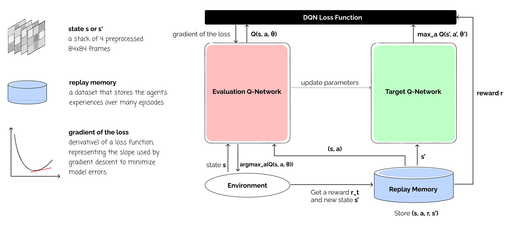
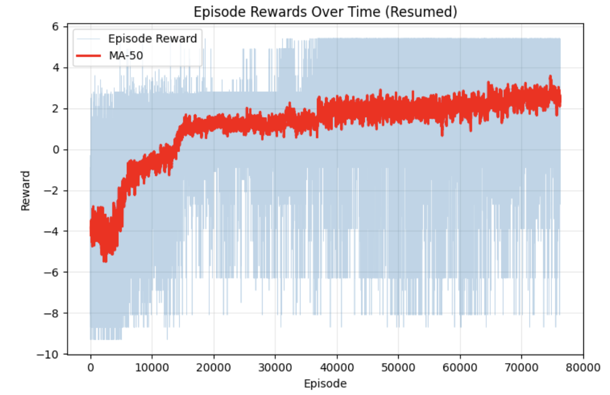
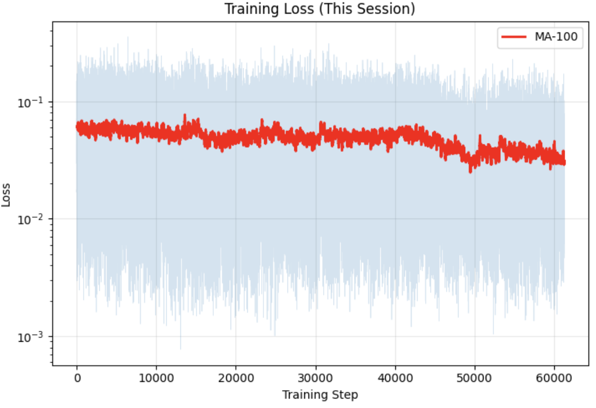
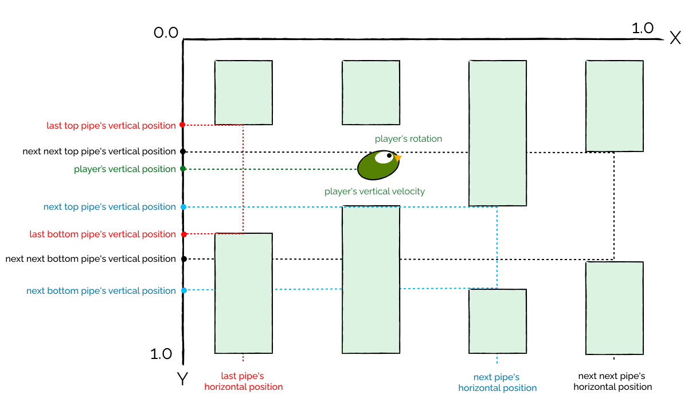
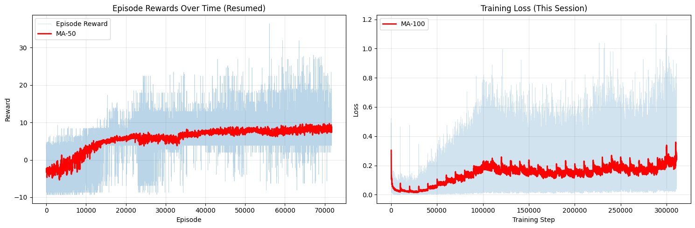

Introduction
This tutorial is a replication of the paper Human-level control through deep reinforcement learning (Mnih, 2015). We will then compare it with a more simpler approach using states.
From Tabular to Deep Q-Learning
Tabular Q-learning stores a value for every state-action pair. In Snake game, the state space is finite because the agent operats on a grid of cells (e.g., 3x3 grid). With high-dimensional observations like images, the state space is effectively infinite. This is because the values of the x and y coordinates of the bird are continuous. Deep Q-Learning solves this by using a neural network to approximate the Q-function. This basically means we approximate the Q-values for similar states.Image-based Approach

Frame Preprocessing

DQN Architecture

Training the Agent


State-based Approach
State Representation

DQN Architecture

Training the Agent

Code Implementation
Image-based
Imports
We use OpenCV for image processing, NumPy for array operations, and PyTorch for building and training the neural network.
import cv2
import numpy as np
import matplotlib.pyplot as plt
from collections import deque
import torch
import random
import torch.nn as nn
import torch.nn.functional as F
import torch.optim as optimFrame Preprocessing
Each step, the environment returns an RGB frame. We convert it to grayscale and resize to 84×84. To capture motion, we take the element-wise maximum of two consecutive frames - this removes flickering artifacts common in Atari-style games.
The preprocess() function takes two consecutive raw frames and returns a single 84×84 grayscale array.
def preprocess(prev_frame: np.ndarray, current_frame: np.ndarray) -> np.ndarray:
"""
Preprocess the input frames to get a 3D array (rows x cols x channels)
Args:
- prev_frame (str): path to the image
- current_frame (str): path to the image
Logic:
- Read both frames into 3D arrays
- Get the new frame by taking the maximum pixel values element-wise between both frames
- Convert the image into gray scale
- Rescale the image into a 2D array with size 84x84
Output:
- rescaled_img: a 2D array (84x84)
"""
new_frame = np.maximum(prev_frame, current_frame)
gray_img = cv2.cvtColor(new_frame, cv2.COLOR_RGB2GRAY)
rescaled_img = cv2.resize(gray_img, (84, 84), interpolation=cv2.INTER_AREA)
return rescaled_imgFrame Buffer
A single frame gives no sense of speed or direction. FrameBuffer maintains a rolling window of the last 4 preprocessed frames, stacking them into a (4, 84, 84) tensor - the actual input to the DQN.
FrameBuffer initialises by repeating the first frame four times so the buffer is always full from step one.
class FrameBuffer:
"""
Maintains a buffer of the last 4 preprocessed frames.
Handles initial steps by repeating the first frame.
"""
def __init__(self, frame_shape=(84,84)):
"""Initialize the attributes of the frame buffer object
- frame shape is 2D (84x84)
- the buffer size is 4
"""
self.frame_shape = frame_shape
self.buffer = deque(maxlen=4)
def add_frame(self, frame: np.ndarray) -> np.ndarray:
"""Add a new frame to the buffer and return stacked frames
Args:
frame: preprocessed frame of shape (84, 84)
Returns:
stacked frames of shape (4, 84, 84) ready for DQN input
"""
if len(self.buffer) == 0:
for _ in range(4):
self.buffer.append(frame)
else:
self.buffer.append(frame)
return np.array(self.buffer)
def reset(self):
self.buffer.clear()
def get_stacked_frames(self) -> np.ndarray:
return np.array(self.buffer)process_obs() is the convenience wrapper called at each environment step: it preprocesses a frame pair and adds the result to the buffer, returning the updated stack.
def process_obs(prev_frame: np.ndarray,
curr_frame: np.ndarray,
frame_buffer: FrameBuffer, env) -> np.ndarray:
"""
Process two observations (prev_frame and curr_frame) into DQN-ready input
Args:
prev_frame: raw vector of pixels from env
curr_frame: raw vector of pixels from env
frame_buffer: FrameBuffer instance
env: Environment instance (for rendering)
Returns:
Stacked frames of shape (84, 84, 4) ready for DQN
"""
preprocessed_frame = preprocess(prev_frame, curr_frame)
stacked = frame_buffer.add_frame(preprocessed_frame)
return stackedComputing Convolutional Output Size
Before defining the fully-connected layers of the CNN, we need to know the exact size of the flattened feature map produced by the convolutional layers. Rather than hard-coding it, we compute it analytically.
conv2d_output_size() computes the spatial output dimensions of a convolutional layer given input size, kernel, stride, and padding.
def conv2d_output_size(input_size, kernel_size, stride, padding=0):
if isinstance(input_size, tuple):
h, w = input_size
if isinstance(kernel_size, tuple):
k_h, k_w = kernel_size
else:
k_h = k_w = kernel_size
if isinstance(stride, tuple):
s_h, s_w = stride
else:
s_h = s_w = stride
if isinstance(padding, tuple):
p_h, p_w = padding
else:
p_h = p_w = padding
o_h = (h - k_h + 2 * p_h) // s_h + 1
o_w = (w - k_w + 2 * p_w) // s_w + 1
return (int(o_h), int(o_w))
else:
k = kernel_size if isinstance(kernel_size, int) else kernel_size[0]
s = stride if isinstance(stride, int) else stride[0]
p = padding if isinstance(padding, int) else padding[0]
return int((input_size - k + 2 * p) // s + 1)DQN Network
The network follows the architecture from the original DQN paper: three convolutional layers to extract spatial features from stacked frames, followed by two fully-connected layers that output a Q-value for each action.
The DQN class uses a dummy forward pass with torch.no_grad() at init time to automatically compute the flattened size - no manual calculation needed.
class DQN(nn.Module):
def __init__(self, num_actions):
super().__init__()
self.conv = nn.Sequential(
nn.Conv2d(4, 32, kernel_size=8, stride=4),
nn.ReLU(),
nn.Conv2d(32, 64, kernel_size=4, stride=2),
nn.ReLU(),
nn.Conv2d(64, 64, kernel_size=3, stride=1),
nn.ReLU(),
)
with torch.no_grad():
dummy = torch.zeros(1, 4, 84, 84)
n_flat = self.conv(dummy).view(1, -1).size(1)
self.fc = nn.Sequential(
nn.Linear(n_flat, 512),
nn.ReLU(),
nn.Linear(512, num_actions)
)
def forward(self, x):
x = self.conv(x)
x = x.reshape(x.size(0), -1)
return self.fc(x)Replay Buffer
Rather than training on consecutive frames (which are highly correlated), we store transitions in a fixed-size ring buffer and sample random mini-batches. This breaks temporal correlations and stabilises training.
States are stored as uint8 (0–255) instead of float32 to save 4× memory. Rewards are clipped to {−1, 0, +1} using np.sign() to keep gradient magnitudes consistent across different reward scales.
class ReplayBuffer:
def __init__(self, capacity):
self.buffer = deque(maxlen=capacity)
def push(self, state, action, reward, next_state, done):
# Store as uint8 (save memory)
state = state.astype(np.uint8)
next_state = next_state.astype(np.uint8)
clipped_reward = np.sign(reward)
self.buffer.append((state, action, clipped_reward, next_state, done))
def sample(self, batch_size):
batch = random.sample(self.buffer, batch_size)
state, action, reward, next_state, done = zip(*batch)
return state, action, reward, next_state, done
def __len__(self):
return len(self.buffer)DQN Agent
The agent selects actions using an ε-greedy policy: with probability ε it explores randomly, otherwise it exploits the current Q-network. ε is annealed linearly from 1.0 down to 0.05 over the first 200k frames.
The DQNAgent tracks steps_done to compute the current ε via linear interpolation, decoupling exploration scheduling from the training loop.
class DQNAgent:
def __init__(
self,
q_net,
num_actions,
eps_start=1.0,
eps_end=0.1,
eps_decay_steps=1_000_000
):
self.q_net = q_net
self.num_actions = num_actions
self.eps_start = eps_start
self.eps_end = eps_end
self.eps_decay_steps = eps_decay_steps
self.steps_done = 0
def epsilon(self):
# Linear annealing from eps_start to eps_end over eps_decay_steps
frac = min(self.steps_done / self.eps_decay_steps, 1.0)
return self.eps_start + frac * (self.eps_end - self.eps_start)
def act(self, state, device='cpu'):
"""
Select action using epsilon-greedy policy
Args:
state: Tensor of shape (4, 84, 84) or (1, 4, 84, 84)
"""
self.steps_done += 1
if np.random.rand() < self.epsilon():
return np.random.randint(self.num_actions)
with torch.no_grad():
if state.dim() == 3: # (4, 84, 84)
state = state.unsqueeze(0) # (1, 4, 84, 84)
state = state.to(device)
q_values = self.q_net(state)
return q_values.argmax(dim=1).item()DQN Trainer
The trainer handles the core learning update: sampling a mini-batch, computing Bellman targets using the frozen target network, and updating the online network via RMSprop. The target network weights are copied from the online network every C steps.
States are normalised from uint8 [0, 255] to float32 [0, 1] only at training time - not during storage - saving significant memory. Huber loss (SmoothL1) is used instead of MSE to reduce sensitivity to outlier Q-value estimates.
class DQNTrainer:
def __init__(
self,
q_net,
target_net,
replay_buffer,
gamma=0.99,
lr=0.00025, # Paper uses 0.00025
batch_size=32,
target_update_freq=10_000,
device='cuda' if torch.cuda.is_available() else 'cpu'
):
self.device = device
self.q_net = q_net.to(device)
self.target_net = target_net.to(device)
self.target_net.load_state_dict(self.q_net.state_dict())
self.target_net.eval()
self.buffer = replay_buffer
self.gamma = gamma
self.batch_size = batch_size
self.target_update_freq = target_update_freq
# RMSprop as per paper
self.optimizer = optim.RMSprop(
self.q_net.parameters(),
lr=lr,
alpha=0.95,
eps=0.01,
)
# Paper uses Huber loss (smooth L1) OR clipped squared error
self.loss_fn = nn.SmoothL1Loss() # Reasonable choice
self.train_steps = 0
def train_step(self):
if len(self.buffer) < self.batch_size:
return None
state, action, reward, next_state, done = self.buffer.sample(self.batch_size)
# Convert uint8 → float32 and normalize to [0, 1]
state = torch.FloatTensor(np.array(state) / 255.0).to(self.device)
next_state = torch.FloatTensor(np.array(next_state) / 255.0).to(self.device)
action = torch.LongTensor(action).to(self.device)
reward = torch.FloatTensor(reward).to(self.device) # Already clipped in buffer
done = torch.FloatTensor(done).to(self.device)
# Current Q values
q_values = self.q_net(state)
q_sa = q_values.gather(1, action.unsqueeze(1)).squeeze(1)
# Target Q values (using target network)
with torch.no_grad():
next_q = self.target_net(next_state).max(1)[0]
target = reward + self.gamma * next_q * (1 - done)
# Compute loss
loss = self.loss_fn(q_sa, target)
# Optimize
self.optimizer.zero_grad()
loss.backward()
# Optional: gradient clipping (not in original paper, but common practice)
# torch.nn.utils.clip_grad_norm_(self.q_net.parameters(), 10)
self.optimizer.step()
# Update target network every C steps
self.train_steps += 1
if self.train_steps % self.target_update_freq == 0:
self.target_net.load_state_dict(self.q_net.state_dict())
return loss.item()Configuration & Hyperparameters
All training hyperparameters are defined at the top of the training script so they are easy to find and modify. The TRAINING_MODE flag lets you switch between a fresh run and resuming from a checkpoint without changing any other code.
Key hyperparameters follow the original DQN paper: 4M training frames, replay buffer of 100k, batch size 32, learning rate 2.5×10⁻⁴, γ = 0.99, and ε decaying over 200k frames.
# ============================================================================
# CONFIGURATION - EDIT THIS TO CONTROL TRAINING MODE
# ============================================================================
TRAINING_MODE = "resume" # Options: "fresh" or "resume"
RESUME_CHECKPOINT = "/content/checkpoints/final_model.pth" # Path to checkpoint for resume mode
# ============================================================================
# IMPORTS
# ============================================================================
import flappy_bird_gymnasium
import gymnasium as gym
import torch
import torch.optim as optim
import numpy as np
from collections import deque
import matplotlib.pyplot as plt
import os
try:
from tqdm import tqdm
except ImportError:
!pip install tqdm
from tqdm import tqdm
# ============================================================================
# HYPERPARAMETERS
# ============================================================================
TOTAL_FRAMES = 4_000_000
REPLAY_BUFFER_SIZE = 100_000
MIN_REPLAY_SIZE = 10_000
BATCH_SIZE = 32
LEARNING_RATE = 0.00025
GAMMA = 0.99
TARGET_UPDATE_FREQ = 2_500
FRAME_SKIP = 4
EPS_START = 1.0
EPS_END = 0.05
EPS_DECAY_FRAMES = 200_000
UPDATE_FREQ = 4
SAVE_FREQ = 50_000
CHECKPOINT_DIR = "/content/checkpoints"
device = torch.device("cuda" if torch.cuda.is_available() else "cpu")
print(f"Using device: {device}")
if device.type == 'cuda':
print(f"GPU: {torch.cuda.get_device_name(0)}")
os.makedirs(CHECKPOINT_DIR, exist_ok=True)Helper Functions
Two utility functions manage checkpointing: save_checkpoint() serialises the full training state (network weights, optimizer state, episode history) so training can be paused and resumed at any point.
initialize_training_state() returns a unified state dictionary regardless of mode - downstream code never needs to branch on whether training is fresh or resumed.
# ============================================================================
# HELPER FUNCTIONS
# ============================================================================
def save_checkpoint(filepath, q_net, target_net, optimizer, total_steps, episode,
episode_rewards, episode_lengths, train_steps=None):
"""Save training checkpoint"""
checkpoint = {
'q_net_state_dict': q_net.state_dict(),
'target_net_state_dict': target_net.state_dict(),
'optimizer_state_dict': optimizer.state_dict(),
'total_steps': total_steps,
'episode': episode,
'episode_rewards': episode_rewards,
'episode_lengths': episode_lengths,
}
if train_steps is not None:
checkpoint['train_steps'] = train_steps
torch.save(checkpoint, filepath)
print(f"✓ Checkpoint saved: {filepath}")
def load_checkpoint(filepath):
"""Load training checkpoint"""
if not os.path.exists(filepath):
raise FileNotFoundError(f"Checkpoint not found: {filepath}")
checkpoint = torch.load(filepath)
print(f"✓ Checkpoint loaded from: {filepath}")
print(f" Total frames: {checkpoint['total_steps']:,}")
print(f" Episode: {checkpoint['episode']}")
print(f" Avg reward (last 10): {np.mean(checkpoint['episode_rewards'][-10:]):.2f}")
return checkpoint
def initialize_training_state(mode, checkpoint_path=None):
"""
Initialize or restore training state based on mode
Args:
mode: "fresh" or "resume"
checkpoint_path: Path to checkpoint (required if mode="resume")
Returns:
dict with training state
"""
if mode == "fresh":
print("\n" + "="*60)
print("STARTING FRESH TRAINING")
print("="*60)
return {
'total_steps': 0,
'episode': 0,
'episode_rewards': [],
'episode_lengths': [],
'losses': [],
'epsilon_history': [],
'last_save': 0,
'q_net_state': None,
'target_net_state': None,
'optimizer_state': None,
}
elif mode == "resume":
print("\n" + "="*60)
print("RESUMING TRAINING FROM CHECKPOINT")
print("="*60)
if checkpoint_path is None:
raise ValueError("checkpoint_path required for resume mode")
checkpoint = load_checkpoint(checkpoint_path)
return {
'total_steps': checkpoint['total_steps'],
'episode': checkpoint['episode'],
'episode_rewards': checkpoint['episode_rewards'],
'episode_lengths': checkpoint['episode_lengths'],
'losses': [], # Fresh loss tracking
'epsilon_history': [], # Fresh epsilon tracking
'last_save': checkpoint['total_steps'],
'q_net_state': checkpoint['q_net_state_dict'],
'target_net_state': checkpoint['target_net_state_dict'],
'optimizer_state': checkpoint['optimizer_state_dict'],
'train_steps': checkpoint.get('train_steps', None),
}
else:
raise ValueError(f"Invalid mode: {mode}. Use 'fresh' or 'resume'")Initialise Environment & Networks
We create the Flappy Bird environment in rgb_array render mode so we can capture raw pixel frames. Two identical DQN instances are created - the online network (q_net) is updated every step, while the target network is frozen and only periodically synced.
The target network is set to eval() mode and its weights are initialised from the online network. Components are wired together: replay buffer → trainer, frame buffer → preprocessing pipeline.
# ============================================================================
# INITIALIZE ENVIRONMENT AND NETWORKS
# ============================================================================
env = gym.make("FlappyBird-v0", render_mode='rgb_array')
num_actions = env.action_space.n
print(f"Number of actions: {num_actions}")
# Create networks
q_net = DQN(num_actions).to(device)
target_net = DQN(num_actions).to(device)
target_net.eval()
# Create components
replay_buffer = ReplayBuffer(REPLAY_BUFFER_SIZE)
frame_buffer = FrameBuffer()
trainer = DQNTrainer(
q_net=q_net,
target_net=target_net,
replay_buffer=replay_buffer,
gamma=GAMMA,
lr=LEARNING_RATE,
batch_size=BATCH_SIZE,
target_update_freq=TARGET_UPDATE_FREQ,
device=device
)
agent = DQNAgent(
q_net=q_net,
num_actions=num_actions,
eps_start=EPS_START,
eps_end=EPS_END,
eps_decay_steps=EPS_DECAY_FRAMES
)
# ============================================================================
# INITIALIZE OR RESTORE TRAINING STATE
# ============================================================================
state = initialize_training_state(
mode=TRAINING_MODE,
checkpoint_path=RESUME_CHECKPOINT if TRAINING_MODE == "resume" else None
)
# Extract state variables
total_steps = state['total_steps']
episode = state['episode']
episode_rewards = state['episode_rewards']
episode_lengths = state['episode_lengths']
losses = state['losses']
epsilon_history = state['epsilon_history']
last_save = state['last_save']
# Load network states if resuming
if state['q_net_state'] is not None:
q_net.load_state_dict(state['q_net_state'])
target_net.load_state_dict(state['target_net_state'])
trainer.optimizer.load_state_dict(state['optimizer_state'])
agent.steps_done = total_steps
# Restore trainer steps
if state.get('train_steps') is not None:
trainer.train_steps = state['train_steps']
else:
trainer.train_steps = max(0, (total_steps - MIN_REPLAY_SIZE) // UPDATE_FREQ)
print(f" Agent steps: {agent.steps_done:,}")
print(f" Trainer steps: {trainer.train_steps:,}")
else:
# Fresh training - initialize target net
target_net.load_state_dict(q_net.state_dict())
print(f"\nTarget: {TOTAL_FRAMES:,} frames")
print(f"Starting from: {total_steps:,} frames")
print(f"Remaining: {TOTAL_FRAMES - total_steps:,} frames")
print("="*60 + "\n")Training Loop
The main loop collects experience by stepping through the environment, stores transitions in the replay buffer, and triggers a training update every 4 frames once the buffer has enough data. Frame skipping (repeating each action for 4 frames) both speeds up training and reduces the action frequency to a more human-like rate.
Checkpoints are saved every 50k frames. On KeyboardInterrupt, the finally block guarantees a final checkpoint is always saved before the script exits.
# ============================================================================
# TRAINING LOOP
# ============================================================================
print(f"Starting training...")
print(f"Expected time: ~1-2 hours on T4 GPU")
print(f"Training will start after {MIN_REPLAY_SIZE:,} frames\n")
pbar = tqdm(total=TOTAL_FRAMES, initial=total_steps, desc="Training")
try:
while total_steps < TOTAL_FRAMES:
# Reset environment
observation, info = env.reset()
frame_buffer.reset()
# Get initial frames
prev_frame = env.render()
curr_frame = env.render()
# Initialize buffer with first frame
first_preprocessed = preprocess(prev_frame, curr_frame)
state_array = frame_buffer.add_frame(first_preprocessed)
episode_reward = 0
episode_length = 0
done = False
while not done and total_steps < TOTAL_FRAMES:
# Select action
state_tensor = torch.FloatTensor(state_array).to(device)
action = agent.act(state_tensor, device=device)
# Execute action with frame skipping
frame_reward = 0
for _ in range(FRAME_SKIP):
observation, reward, terminated, truncated, info = env.step(action)
frame_reward += reward
total_steps += 1
# Check if we've hit the target
if total_steps >= TOTAL_FRAMES:
done = True
break
if terminated or truncated:
done = True
break
# Get next state
curr_frame = env.render()
preprocessed = preprocess(prev_frame, curr_frame)
next_state = frame_buffer.add_frame(preprocessed)
# Store transition
replay_buffer.push(state_array, action, frame_reward, next_state, done)
# Train
if len(replay_buffer) >= MIN_REPLAY_SIZE and total_steps % UPDATE_FREQ == 0:
loss = trainer.train_step()
if loss is not None:
losses.append(loss)
# Save checkpoint periodically
if total_steps - last_save >= SAVE_FREQ:
checkpoint_path = f"{CHECKPOINT_DIR}/checkpoint_{total_steps}.pth"
save_checkpoint(
checkpoint_path, q_net, target_net, trainer.optimizer,
total_steps, episode, episode_rewards, episode_lengths,
train_steps=trainer.train_steps
)
last_save = total_steps
# Update state
state_array = next_state
prev_frame = curr_frame
episode_reward += frame_reward
episode_length += 1
# Update progress bar
pbar.update(FRAME_SKIP)
# Record epsilon
if total_steps % 1000 == 0:
epsilon_history.append((total_steps, agent.epsilon()))
# Episode ended
episode += 1
episode_rewards.append(episode_reward)
episode_lengths.append(episode_length)
# Print progress
if episode % 10 == 0:
avg_reward = np.mean(episode_rewards[-10:]) if len(episode_rewards) >= 10 else np.mean(episode_rewards)
avg_length = np.mean(episode_lengths[-10:]) if len(episode_lengths) >= 10 else np.mean(episode_lengths)
avg_loss = np.mean(losses[-100:]) if len(losses) >= 100 else (np.mean(losses) if losses else 0)
pbar.set_postfix({
'Ep': episode,
'Reward': f'{avg_reward:.1f}',
'ε': f'{agent.epsilon():.3f}',
'Loss': f'{avg_loss:.4f}'
})
except KeyboardInterrupt:
print("\n⚠️ Training interrupted by user")
finally:
pbar.close()
env.close()
# Save final checkpoint
final_path = f"{CHECKPOINT_DIR}/final_model.pth"
save_checkpoint(
final_path, q_net, target_net, trainer.optimizer,
total_steps, episode, episode_rewards, episode_lengths,
train_steps=trainer.train_steps
)
print("\n✓ Training completed!")
print(f"Total frames: {total_steps:,}")
print(f"Total episodes: {episode}")
# ============================================================================
# VISUALIZATION
# ============================================================================
fig, axes = plt.subplots(2, 2, figsize=(15, 10))
# Plot 1: Episode Rewards
axes[0, 0].plot(episode_rewards, alpha=0.3, label='Episode Reward', linewidth=0.5)
if len(episode_rewards) >= 50:
window = min(50, len(episode_rewards))
moving_avg = np.convolve(episode_rewards, np.ones(window)/window, mode='valid')
axes[0, 0].plot(range(window-1, len(episode_rewards)), moving_avg,
'r-', linewidth=2, label=f'MA-{window}')
axes[0, 0].set_xlabel('Episode')
axes[0, 0].set_ylabel('Reward')
title_suffix = " (Resumed)" if TRAINING_MODE == "resume" else ""
axes[0, 0].set_title(f'Episode Rewards Over Time{title_suffix}')
axes[0, 0].legend()
axes[0, 0].grid(True, alpha=0.3)
# Plot 2: Episode Lengths
axes[0, 1].plot(episode_lengths, alpha=0.3, label='Episode Length', linewidth=0.5)
if len(episode_lengths) >= 50:
window = min(50, len(episode_lengths))
moving_avg = np.convolve(episode_lengths, np.ones(window)/window, mode='valid')
axes[0, 1].plot(range(window-1, len(episode_lengths)), moving_avg,
'r-', linewidth=2, label=f'MA-{window}')
axes[0, 1].set_xlabel('Episode')
axes[0, 1].set_ylabel('Steps')
axes[0, 1].set_title(f'Episode Lengths Over Time{title_suffix}')
axes[0, 1].legend()
axes[0, 1].grid(True, alpha=0.3)
# Plot 3: Epsilon Decay
if epsilon_history:
steps, eps_values = zip(*epsilon_history)
axes[1, 0].plot(steps, eps_values, 'g-', linewidth=2)
axes[1, 0].set_xlabel('Frame')
axes[1, 0].set_ylabel('Epsilon')
title = 'Epsilon Decay (This Session)' if TRAINING_MODE == "resume" else 'Epsilon Decay'
axes[1, 0].set_title(title)
axes[1, 0].grid(True, alpha=0.3)
else:
axes[1, 0].text(0.5, 0.5, 'No epsilon data\n(resumed from checkpoint)',
ha='center', va='center', transform=axes[1, 0].transAxes)
axes[1, 0].set_title('Epsilon Decay')
# Plot 4: Training Loss
if losses:
axes[1, 1].plot(losses, alpha=0.2, linewidth=0.5)
if len(losses) >= 100:
window = 100
moving_avg = np.convolve(losses, np.ones(window)/window, mode='valid')
axes[1, 1].plot(range(window-1, len(losses)), moving_avg,
'r-', linewidth=2, label=f'MA-{window}')
axes[1, 1].set_xlabel('Training Step')
axes[1, 1].set_ylabel('Loss')
title = 'Training Loss (This Session)' if TRAINING_MODE == "resume" else 'Training Loss'
axes[1, 1].set_title(title)
axes[1, 1].set_yscale('log')
axes[1, 1].legend()
axes[1, 1].grid(True, alpha=0.3)
else:
axes[1, 1].text(0.5, 0.5, 'No loss data yet',
ha='center', va='center', transform=axes[1, 1].transAxes)
axes[1, 1].set_title('Training Loss')
plt.tight_layout()
save_name = 'training_results_resumed.png' if TRAINING_MODE == "resume" else 'training_results.png'
plt.savefig(f'/content/{save_name}', dpi=150, bbox_inches='tight')
plt.show()
# ============================================================================
# SUMMARY
# ============================================================================
print("\n" + "="*60)
print("TRAINING SUMMARY")
print("="*60)
print(f"Training mode: {TRAINING_MODE.upper()}")
print(f"Total frames: {total_steps:,}")
print(f"Total episodes: {episode}")
print(f"Average reward: {np.mean(episode_rewards):.2f} ± {np.std(episode_rewards):.2f}")
print(f"Best reward: {np.max(episode_rewards):.2f}")
print(f"Worst reward: {np.min(episode_rewards):.2f}")
print(f"Last 50 eps avg: {np.mean(episode_rewards[-50:]):.2f}" if len(episode_rewards) >= 50 else "N/A")
print(f"Last 100 eps avg: {np.mean(episode_rewards[-100:]):.2f}" if len(episode_rewards) >= 100 else "N/A")
print(f"Avg episode length: {np.mean(episode_lengths):.1f}")
print(f"Final epsilon: {agent.epsilon():.3f}")
print(f"Training steps: {trainer.train_steps:,}")
print(f"Replay buffer: {len(replay_buffer):,}/{REPLAY_BUFFER_SIZE:,}")
print("="*60)
# Download model
from google.colab import files
print("\n📥 Downloading final model...")
files.download(final_path)
print("✓ Model downloaded!")State-based
Setup
Install the Flappy Bird Gymnasium package and explore the environment's observation space to understand what the state vector contains.
The environment exposes a 12-dimensional state vector including the bird's position, velocity, and relative distances to the next pipes - no pixel processing required.
!pip install flappy_bird_gymnasium
import gymnasium as gym
import flappy_bird_gymnasium
import inspect
env = gym.make("FlappyBird-v0", use_lidar=False)
obs, _ = env.reset()
# Check if environment has state names defined
if hasattr(env.unwrapped, '_get_observation'):
print("Found _get_observation method")
print(inspect.getsource(env.unwrapped._get_observation_features))
# Check environment attributes
print("\nEnvironment attributes:")
for attr in dir(env.unwrapped):
if 'state' in attr.lower() or 'obs' in attr.lower():
print(f" - {attr}")
print(f"Observation shape: {obs.shape}")
print(f"Number of actions: {env.action_space.n}")
print(f"First few values: {obs[:20]}")Configuration & Hyperparameters
The state-based approach uses the same general hyperparameter structure but with a larger TARGET_UPDATE_FREQ (10k vs 2.5k) since the compact state space converges more smoothly and doesn't need as aggressive target refreshes.
Imports, device detection, and directory setup mirror the image-based script so both approaches can be run side-by-side.
# ============================================================================
# CONFIGURATION
# ============================================================================
TRAINING_MODE = "resume"
RESUME_CHECKPOINT = None
# ============================================================================
# HYPERPARAMETERS
# ============================================================================
TOTAL_FRAMES = 5_000_000
REPLAY_BUFFER_SIZE = 100_000
MIN_REPLAY_SIZE = 10_000
BATCH_SIZE = 32
LEARNING_RATE = 0.00025
GAMMA = 0.99
TARGET_UPDATE_FREQ = 10_000
FRAME_SKIP = 4
EPS_START = 1.0
EPS_END = 0.05
EPS_DECAY_FRAMES = 200_000
UPDATE_FREQ = 4
SAVE_FREQ = 50_000
CHECKPOINT_DIR = "/content/checkpoints"
device = torch.device("cuda" if torch.cuda.is_available() else "cpu")
print(f"Using device: {device}")
os.makedirs(CHECKPOINT_DIR, exist_ok=True)State DQN Network
Because the input is already a clean numeric vector, a simple fully-connected network suffices - no convolutional layers needed. Three linear layers with ReLU activations map the state directly to Q-values.
StateDQN is dramatically simpler and faster to train than the CNN: a 12-dimensional input, two hidden layers of 256 units, and a 2-dimensional output (flap or do nothing).
# ============================================================================
# STATE-BASED DQN NETWORK (Simple Fully Connected)
# ============================================================================
class StateDQN(nn.Module):
def __init__(self, state_dim, num_actions, hidden_dim=256):
super().__init__()
self.network = nn.Sequential(
nn.Linear(state_dim, hidden_dim),
nn.ReLU(),
nn.Linear(hidden_dim, hidden_dim),
nn.ReLU(),
nn.Linear(hidden_dim, num_actions)
)
def forward(self, x):
return self.network(x)Replay Buffer
Unlike the image-based buffer, there is no need to cast states to uint8 - state vectors are already compact floats. Rewards are still clipped to stabilise training.
SimpleReplayBuffer removes all the image-specific memory optimisations, keeping the implementation clean and straightforward.
# ============================================================================
# Simple Replay Buffer (No Image Preprocessing Needed)
# ============================================================================
class SimpleReplayBuffer:
def __init__(self, capacity):
self.buffer = deque(maxlen=capacity)
def push(self, state, action, reward, next_state, done):
# Clip the reward: positive values turn into 1 and negative values turn into 0
clipped_reward = np.sign(reward)
self.buffer.append((state, action, clipped_reward, next_state, done))
def sample(self, batch_size):
batch = random.sample(self.buffer, batch_size)
state, action, reward, next_state, done = zip(*batch)
return state, action, reward, next_state, done
def __len__(self):
return len(self.buffer)DQN Agent
The agent uses the same ε-greedy strategy as the image-based version. The key difference is that state inputs are plain float vectors rather than stacked image tensors, so no preprocessing is needed before the forward pass.
StateDQNAgent accepts either a raw NumPy array or a Tensor - it handles both cases internally, simplifying the training loop.
# ============================================================================
# DQN Agent (No Frame Stacking)
# ============================================================================
class StateDQNAgent:
def __init__(self, q_net, num_actions, eps_start=1.0, eps_end=0.1,
eps_decay_steps=1_000_000):
self.q_net = q_net
self.num_actions = num_actions
self.eps_start = eps_start
self.eps_end = eps_end
self.eps_decay_steps = eps_decay_steps
self.steps_done = 0
def epsilon(self):
frac = min(self.steps_done / self.eps_decay_steps, 1.0)
return self.eps_start + frac * (self.eps_end - self.eps_start)
def act(self, state, device='cpu'):
self.steps_done += 1
if np.random.rand() < self.epsilon():
return np.random.randint(self.num_actions)
with torch.no_grad():
# State is already a vector, just convert to tensor
if not isinstance(state, torch.Tensor):
state = torch.FloatTensor(state)
if state.dim() == 1:
state = state.unsqueeze(0)
state = state.to(device)
q_values = self.q_net(state)
return q_values.argmax(dim=1).item()DQN Trainer
The trainer uses Adam instead of RMSprop - a common choice for state-based DQN since the loss landscape is smoother without the high-variance pixel inputs. No float normalisation is needed since state values are already in a reasonable range.
The structure mirrors DQNTrainer exactly, making it easy to compare the two approaches. The only meaningful differences are the optimizer choice and the absence of uint8 → float32 conversion.
# ============================================================================
# DQN Trainer
# ============================================================================
class StateDQNTrainer:
def __init__(self, q_net, target_net, replay_buffer, gamma=0.99,
lr=0.00025, batch_size=32, target_update_freq=10_000,
device='cuda'):
self.device = device
self.q_net = q_net.to(device)
self.target_net = target_net.to(device)
self.target_net.load_state_dict(self.q_net.state_dict())
self.target_net.eval()
self.buffer = replay_buffer
self.gamma = gamma
self.batch_size = batch_size
self.target_update_freq = target_update_freq
self.optimizer = optim.Adam(q_net.parameters(), lr=lr)
self.loss_fn = nn.SmoothL1Loss()
self.train_steps = 0
def train_step(self):
if len(self.buffer) < self.batch_size:
return None
state, action, reward, next_state, done = self.buffer.sample(self.batch_size)
# Convert to tensors (states are already clean vectors)
state = torch.FloatTensor(np.array(state)).to(self.device)
next_state = torch.FloatTensor(np.array(next_state)).to(self.device)
action = torch.LongTensor(action).to(self.device)
reward = torch.FloatTensor(reward).to(self.device)
done = torch.FloatTensor(done).to(self.device)
# Current Q values
q_values = self.q_net(state)
q_sa = q_values.gather(1, action.unsqueeze(1)).squeeze(1)
# Target Q values
with torch.no_grad():
next_q = self.target_net(next_state).max(1)[0]
target = reward + self.gamma * next_q * (1 - done)
# Compute loss
loss = self.loss_fn(q_sa, target)
# Optimize
self.optimizer.zero_grad()
loss.backward()
self.optimizer.step()
# Update target network
self.train_steps += 1
if self.train_steps % self.target_update_freq == 0:
self.target_net.load_state_dict(self.q_net.state_dict())
return loss.item()Helper Functions
Checkpoint saving follows the same pattern as the image-based script so the two training runs are interchangeable from a workflow perspective.
save_checkpoint() serialises network weights, optimizer state, and full episode history. The optional train_steps argument preserves the target-network update counter across resumes.
# ============================================================================
# HELPER FUNCTIONS
# ============================================================================
def save_checkpoint(filepath, q_net, target_net, optimizer, total_steps, episode,
episode_rewards, episode_lengths, train_steps=None):
checkpoint = {
'q_net_state_dict': q_net.state_dict(),
'target_net_state_dict': target_net.state_dict(),
'optimizer_state_dict': optimizer.state_dict(),
'total_steps': total_steps,
'episode': episode,
'episode_rewards': episode_rewards,
'episode_lengths': episode_lengths,
}
if train_steps is not None:
checkpoint['train_steps'] = train_steps
torch.save(checkpoint, filepath)
print(f"✓ Checkpoint saved: {filepath}")Initialise Environment & Networks
The environment is created with use_lidar=False to get the compact state vector. The state dimension is read directly from the observation space so the network size adapts automatically if the environment changes.
All components - network, target network, replay buffer, trainer, and agent - are instantiated here and wired together before the training loop begins.
# ============================================================================
# MODIFIED: INITIALIZE ENVIRONMENT (State-Based)
# ============================================================================
env = gym.make("FlappyBird-v0", use_lidar=False)
num_actions = env.action_space.n
state_dim = env.observation_space.shape[0] # Should be 12
print(f"State dimension: {state_dim}")
print(f"Number of actions: {num_actions}")
# Create networks
q_net = StateDQN(state_dim, num_actions, hidden_dim=256).to(device)
target_net = StateDQN(state_dim, num_actions, hidden_dim=256).to(device)
target_net.load_state_dict(q_net.state_dict())
target_net.eval()
# Create components
replay_buffer = SimpleReplayBuffer(REPLAY_BUFFER_SIZE)
trainer = StateDQNTrainer(
q_net=q_net,
target_net=target_net,
replay_buffer=replay_buffer,
gamma=GAMMA,
lr=LEARNING_RATE,
batch_size=BATCH_SIZE,
target_update_freq=TARGET_UPDATE_FREQ,
device=device
)
agent = StateDQNAgent(
q_net=q_net,
num_actions=num_actions,
eps_start=EPS_START,
eps_end=EPS_END,
eps_decay_steps=EPS_DECAY_FRAMES
)Training Loop
The training loop is structurally identical to the image-based version, but simpler: no frame rendering, no FrameBuffer, and no pixel preprocessing. The environment state is used directly at each step.
This simplicity is the main advantage of the state-based approach - the loop is easier to debug and runs significantly faster per episode, reaching convergence in far fewer wall-clock hours.
# ============================================================================
# TRAINING LOOP
# ============================================================================
episode_rewards = []
episode_lengths = []
losses = []
epsilon_history = []
total_steps = 0
episode = 0
last_save = 0
print(f"\nStarting training for {TOTAL_FRAMES:,} frames...")
print(f"Training will start after {MIN_REPLAY_SIZE:,} frames\n")
pbar = tqdm(total=TOTAL_FRAMES, desc="Training")
try:
while total_steps < TOTAL_FRAMES:
# Reset environment
state, info = env.reset() # State is already a clean vector!
episode_reward = 0
episode_length = 0
done = False
while not done and total_steps < TOTAL_FRAMES:
# Select action (no preprocessing needed!)
action = agent.act(state, device=device)
# Execute action with frame skipping
frame_reward = 0
for _ in range(FRAME_SKIP):
next_state, reward, terminated, truncated, info = env.step(action)
frame_reward += reward
total_steps += 1
if total_steps >= TOTAL_FRAMES:
done = True
break
if terminated or truncated:
done = True
break
# Store transition (states are already vectors!)
replay_buffer.push(state, action, frame_reward, next_state, done)
# Train
if len(replay_buffer) >= MIN_REPLAY_SIZE and total_steps % UPDATE_FREQ == 0:
loss = trainer.train_step()
if loss is not None:
losses.append(loss)
# Save checkpoint periodically
if total_steps - last_save >= SAVE_FREQ:
checkpoint_path = f"{CHECKPOINT_DIR}/checkpoint_{total_steps}.pth"
save_checkpoint(
checkpoint_path, q_net, target_net, trainer.optimizer,
total_steps, episode, episode_rewards, episode_lengths,
train_steps=trainer.train_steps
)
last_save = total_steps
# Update state
state = next_state
episode_reward += frame_reward
episode_length += 1
# Update progress bar
pbar.update(FRAME_SKIP)
# Record epsilon
if total_steps % 1000 == 0:
epsilon_history.append((total_steps, agent.epsilon()))
# Episode ended
episode += 1
episode_rewards.append(episode_reward)
episode_lengths.append(episode_length)
# Print progress
if episode % 10 == 0:
avg_reward = np.mean(episode_rewards[-10:]) if len(episode_rewards) >= 10 else np.mean(episode_rewards)
avg_length = np.mean(episode_lengths[-10:]) if len(episode_lengths) >= 10 else np.mean(episode_lengths)
avg_loss = np.mean(losses[-100:]) if len(losses) >= 100 else (np.mean(losses) if losses else 0)
pbar.set_postfix({
'Ep': episode,
'Reward': f'{avg_reward:.1f}',
'ε': f'{agent.epsilon():.3f}',
'Loss': f'{avg_loss:.4f}'
})
except KeyboardInterrupt:
print("\n⚠️ Training interrupted by user")
finally:
pbar.close()
env.close()
# Save final checkpoint
final_path = f"{CHECKPOINT_DIR}/final_model_state_based.pth"
save_checkpoint(
final_path, q_net, target_net, trainer.optimizer,
total_steps, episode, episode_rewards, episode_lengths,
train_steps=trainer.train_steps
)
print("\n✓ Training completed!")
print(f"Total frames: {total_steps:,}")
print(f"Total episodes: {episode}")Results
Both approaches successfully learned to play Flappy Bird, but with very different training dynamics. The table below summarises the key metrics after training.
| Image-based | State-based | |
|---|---|---|
| Input | 4 × 84 × 84 stacked frames | 12-dimensional state vector |
| Network | 3 Conv layers + 2 FC layers | 2 FC layers (256 hidden units) |
| Optimizer | RMSprop (lr = 2.5×10⁻⁴) | Adam (lr = 2.5×10⁻⁴) |
| Training frames | 4M | 5M |
| Avg. reward (MA-50) | ~2.5 | ~9 |
| Convergence speed | Slow - visible improvement after ~20k episodes | Fast - plateau reached by ~20k episodes |
The state-based agent converges faster and achieves a higher average reward. This is expected - the state vector directly encodes everything the agent needs to know (bird velocity, pipe distances), so the network can focus entirely on learning the control policy rather than first having to figure out what is relevant in a 84×84 image.
The image-based agent learns more slowly because it must discover the relevant visual features from scratch through millions of pixel observations. Its reward curve is also noisier and plateaus lower, partly because raw pixel inputs produce higher-variance gradient estimates and partly because the reward shaping is harder without explicit positional information.
That said, the image-based approach is more general - it requires no hand-crafted state features and could in principle be applied to any game with minimal modification. The state-based approach works well here precisely because Flappy Bird's dynamics are simple enough to capture in a small vector; for more complex environments, designing such a vector becomes non-trivial.